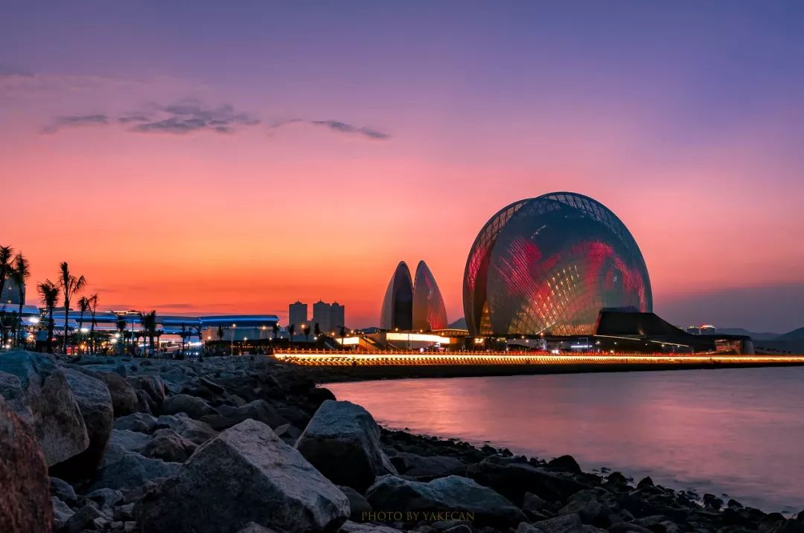
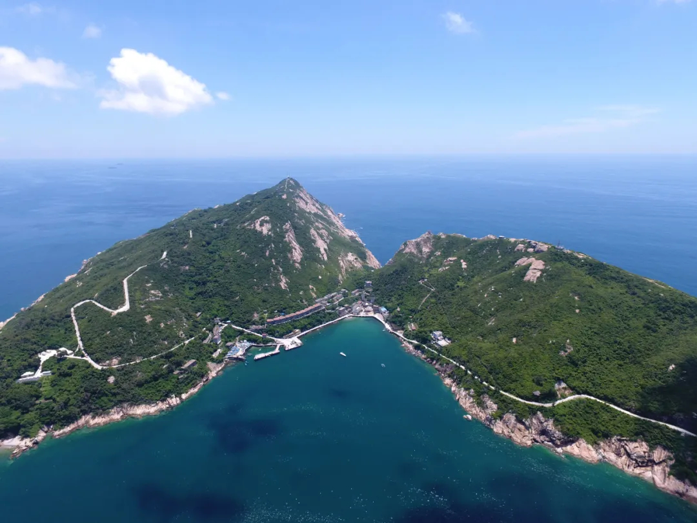
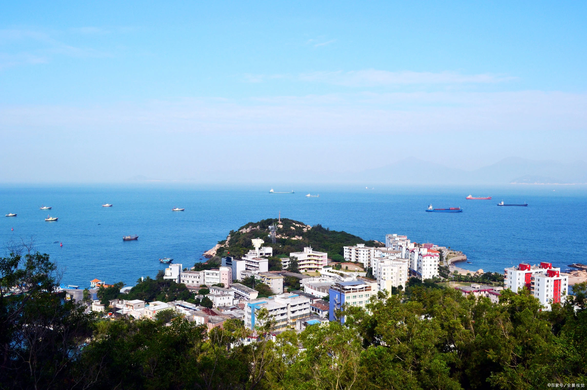
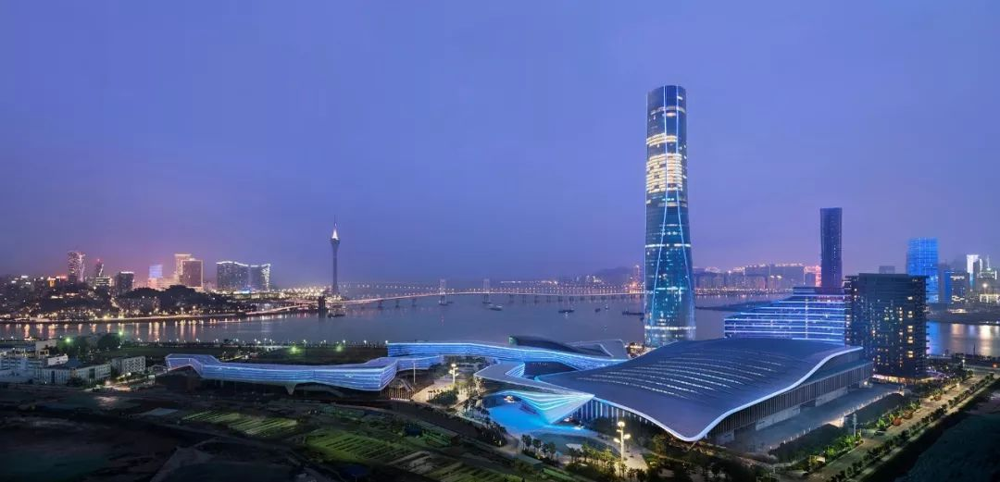
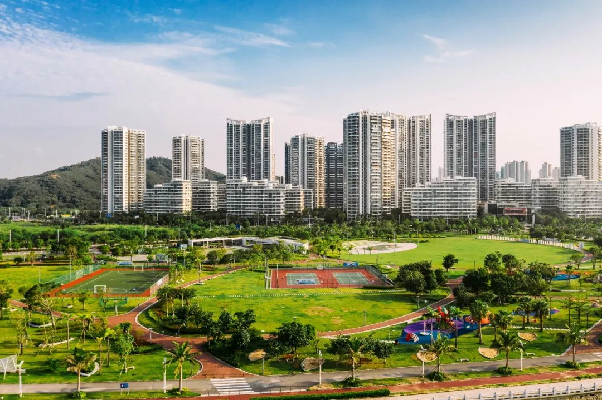
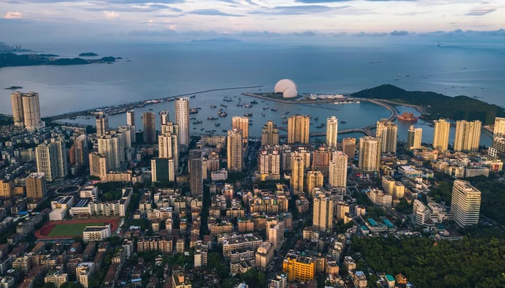

百岛之市 浪漫之城

必 游 景 点

圆明新园
融古典皇家建筑群、江南古典园林建之幻境，将一座座仙山琼阁散落于福海周围，按“徐福海中求”之寓意，把东湖命名为福海。它是当年皇帝及后妃们游湖、观龙舟、观烟火的好去处。 是圆明园中水上活动的中心。圆明新园的福海把这一景象再现，加上帝后们的龙舟巡游表演。

珠海大剧院
由一大一小两组“贝壳”组成，构成了海岛歌剧院的整体形象，因此得称“日月贝”。

淇澳岛
淇澳岛历史悠久，人文资源丰富，白石街、天后宫、抗英炮台和苏兆征故居是珠海市文物保护单位。

外伶仃岛
万山群岛之中，伶仃洋之上，面积只有4.23平方公里。

十字门夜景
珠海十字门商务区在横琴大桥周围。上至湾仔口岸，下到横琴镇的道路两侧。
格力海岸


香洲岛